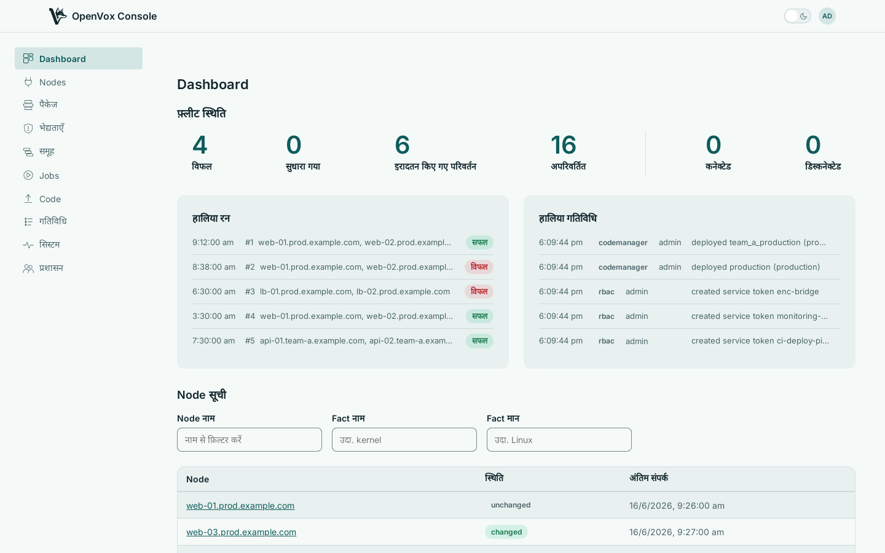

हर Node देखिए, तय कीजिए कि क्या कहाँ चले, अपना कोड deploy कीजिए, और जो लौटकर आए उस पर कार्रवाई कीजिए। OpenVox के लिए एक Puppet Enterprise कंसोल — एक Go बाइनरी, उन्हीं openvox-server और openvoxdb के ऊपर जिन्हें आप पहले से चला रहे हैं।
{kind=link}

Why teams choose it
Every picture below is the console itself, captured from a running instance.
{kind=link}
Every package every node reports, matched against known vulnerabilities from OSV — or your own mirror of it, for sites with no way out — and from Tenable, merged into one list. See what patching would fix first. A node nobody could assess is shown as exactly that, never as clean.
{kind=link}
Single sign-on through OpenID Connect, with your provider's groups mapped onto console roles at every sign-in. Roles are plain sets of permissions, so people see exactly what their job needs. Automation gets service tokens of its own, and every change is on the record.
{kind=link}
Start with one instance. When the fleet grows, run the same image as separate web, worker and orchestrator instances, clustered with mutual TLS, and put classification right beside your compilers. Everything durable lives in Postgres, so instances come and go behind a load balancer, and one page shows the whole fleet of them.
{kind=link}
Run Puppet on one node, a selection, or every node a group matches, without waiting for the next scheduled run. Each node's result comes back on its own — status, output and a link to the report it produced — and a node that was offline says so straight away.
{kind=link}
Deploy from one control repository or one per team, on demand or on every push. Then see, for each repository, how many nodes are assigned to its environments against how many are actually running from them — the gap that says a deploy has not landed, or that nodes are running code nothing sends them to.
And the rest of a console
Built on the stack you already run
openvox-server still compiles catalogs and runs the CA; openvoxdb still stores facts and reports. Your agents carry on talking to exactly what they talk to now — the console serves the standard ENC contract, so there is nothing to change on the node side.
docker compose up openvoxserver, openvoxdb, Postgres और कंसोल को एक साथ चालू कर देता है, ताकि आप एक परीक्षण एजेंट उस पर लगाकर अपने अपने Nodes को प्रकट होते देख सकें — किसी भी प्रतिबद्धता से पहले।
OpenVox Console ships as container images, built for amd64 and arm64 on every push, and as a single binary. The install guides take you from an empty host to a working deployment - openvoxserver, openvoxdb, Postgres and the console - with containers or with packages.